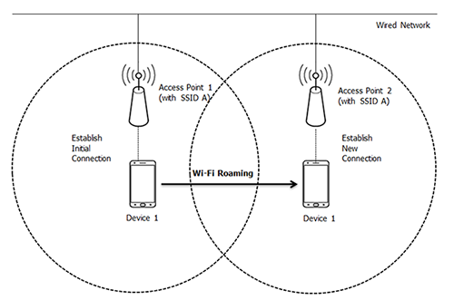
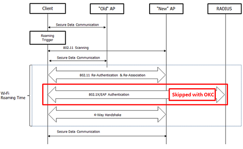
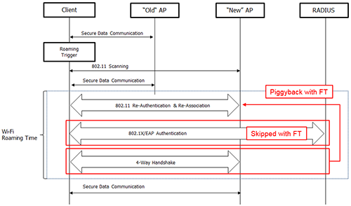
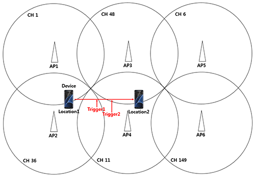
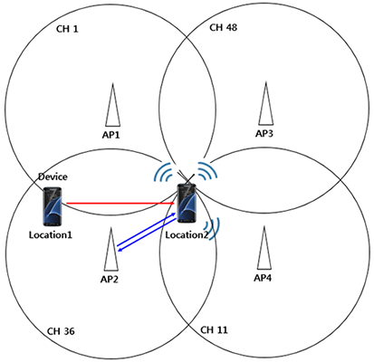
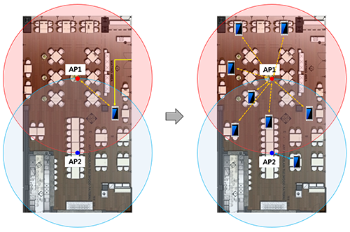

Enhanced roaming algorithm
Last updated July 26th, 2023
Categories:
Basic roaming algorithm
Roaming is a term used to describe when a device goes out of range of one Access Point (AP) and shifts Wi-Fi network association to the next available AP within the same Extended Service Set (ESS) without losing connection.

There are 3 factors that trigger roaming on a Samsung mobile device:
-
Weak signal — Mobile devices trigger a roaming scan to avoid frequent retransmissions from lost packets. When the current AP’s Received Signal Strength Indicator (RSSI) value is weak (below -75dBm), the device searches for an AP with a stronger signal.
-
Beacon loss — When beacon packets from a connected AP isn’t received after 2 seconds (6 second if the display is OFF), the mobile device considers it a lost beacon and triggers a roaming scan.
-
Channel Utilization (CU) — When multiple clients are connected to the same AP, connectivity may be hindered despite having a strong radio signal due to limited resources. In which case, the AP will notify the clients of its current traffic through the CU factor in its beacon. The mobile device will then trigger a roaming scan if the received CU value is greater than 70 percent and the current RSSI value is between -65dBM and -75dBm.
Currently, CU roaming is supported on Galaxy S and Note series devices released since the Galaxy S8. The mobile devices will choose to connect to a new AP with 10dBm higher RSSI value than the current AP from the result of its roaming scan triggered by the aforementioned cases.
Save roaming channels
The purpose of roaming is to provide a seamless data experience. However, data may be muted while performing roaming scans. To remedy this, Samsung mobile devices support partial scanning for a more efficient roaming performance.
For a partial scan, a mobile device maintains a list of channels containing the same SSID at every scan. During roaming, the device will only scan for the channels in this list instead of a full-channel scan. This helps the device to update the scan list at a much faster rate.
For example, on Galaxy S series, an active scan takes 40ms and a passive scan (on DFS channels) takes 130ms. With this, a legacy full-scan takes about 2800ms to complete while a partial scan with 7 saved channels will only take about 280ms — a 90% improvement.
Opportunistic key caching
During roaming, data is muted until the mobile device completes connecting to a new AP. To avoid user-level interference, Samsung mobile devices use Opportunistic Key Caching (OKC) to speed up roaming connection.
OKC allows the wireless client and the WLAN infrastructure to cache only one PMK for the lifetime of the client association with this WLAN (derived from the MSK after the initial 802.1X/EAP authentication with the Authentication Server). This holds even when roaming between multiple APs where they all share the original PMK that is used as the seed on all WPA2 4-way handshakes.
Note that this is not an 802.11-standardized method for roaming.

Advantage of 802.11r
802.11r or Fast BSS Transition (FT) seeks to reduce the length of time of lost connectivity between the STA and the DS during a BSS transition. The FT protocols are part of the Re-Association service, and they only apply to STA transitions between APs within the same mobility domain of the same ESS.
IEEE 802.11r specifies FT between access points by redefining the security key negotiation protocol, allowing both the negotiation and requests for wireless resources (similar to RSVP but defined in 802.11e) to occur in parallel.
The key negotiation protocol in 802.11i requires the client to renegotiate its key with a RADIUS or other authentication server supporting Extensible Authentication Protocol (EAP) on every handoff for a 802.1X-based authentication, which is a time-consuming process. To save time, part of the key derived from server is cached in the wireless network, which allows a reasonable number of future connections to be based on the cached key instead of re-running 802.11X process every time.
The non-802.11r BSS transition takes the following steps.
-
Run a roaming scan and find an AP for roaming.
-
Exchange 802.11 Authentication messages with the target access point, first from the client, then from the AP.
-
Exchange Re-Association messages to establish connection at the target AP.
-
Start 802.1X/EAP authentication and derive a Master Session Key (MSK).
-
Derive the Pairwise Transient Key (PTK) by using the 802.11i 4-Way Handshake of session keys to create a unique encryption key for the association base on the Master Session Key.
FT follows the same procedure except for the 802.1X negotiation where it piggybacks the PTK exchanges with the 802.11 Authentication and Re-Association messages instead.
802.11r supported devices
All Samsung Android devices from Android P and onwards support 802.11r.

Advantage of 802.11k (neighbor report, beacon report)
The 802.11k standard allows STAs or APs to get WLAN information from each other. There are many features regarding this, but mobile devices currently only support neighbor report and beacon report features. Both STAs and APs are able to get information about nearby APs through neighbor and beacon reports respectively.
-
Neighbor Report
As explained in partial scanning section, the mobile device maintains a roaming channel list to reduce scan time. But, there are cases where the device may trigger a full-scan in order to find a roaming AP. In the following diagram, the mobile device initially finds AP1 and AP2 and saves CH 1 and CH 36 in the roaming channel list after connecting to AP2.
When the mobile device moves from Location1 to Location2, roaming will be triggered at point, Trigger1 due to a weak RSSI value. While the mobile device tries to find a roaming candidate in CH 1 and CH 36 via a partial scan, it is not able to find any other AP from the list other than AP2. Only after a full-scan will the mobile device discover AP3 and AP4 where it will add CH 11 and CH 46 to its roaming channel list after it connects to AP4.

Having neighbor reports avoids full-scans from such instance from happening. Initially, mobile device will save CH 1 and CH 36 in the channel list as it connects to AP2, which is equal to previous case. Then, in addition, it will also send a neighbor report request to AP2. AP2 will return a list of nearby AP’s, which is AP1, AP2 and AP4. From this response, mobile devices will add CH 11 in its roaming channel list.
As the mobile device moves away from Location 1 to Location2, the device will run a partial roaming scan at Trigger1 for CH 1, CH 11 and CH 36. This time, the device finds AP4 from its partial scan and successfully connects to AP4. After roaming success, mobile device will repeat the steps by sending a neighbor request to AP4.
-
Beacon Report
APs may support roaming by sharing its neighbor list or BTM request. These requests serve as a list of recommended roaming candidates for the client devices. However, if this information is incorrect, it may disorient mobile devices’ roaming decisions. To suggest the best roaming candidate to a client, AP may receive other APs’ distances from its device client through a beacon report.
When mobile device receives a beacon report request, it will run a scan to collect beacon frames with their respective signal strengths and return it to the AP. The AP then, can choose the best roaming AP by combining internal information with the received beacon report.
802.11k supported devices (Updated March 2023)
- Galaxy S23 Ultra (SM-S918)
- Galaxy S23+ (SM-S916)
- Galaxy S23 (SM-S911)
- Galaxy S22 Ultra (SM-S908)
- Galaxy S22+ (SM-S906)
- Galaxy S22 (SM-S901)
- Galaxy S21 FE 5G (SM-G990)
- Galaxy Z Fold4 5G (SM-F936)
- Galaxy Z Flip4 5G (SM-F721)
- Galaxy Z Fold3 5G (SM-F926)
- Galaxy Z Flip3 5G (SM-F711)
- Galaxy XCover6 Pro (SM-G736)
- Galaxy XCover Pro (SM-G715)
- Galaxy XCover5 (SM-G525)
- Galaxy M54 5G (SM-M546)
- Galaxy A54 5G (SM-A546)
- Galaxy A34 5G (SM-A346)
- Galaxy M34 5G (SM-M346)
- Galaxy M14 5G (SM-M146)
- Galaxy A14 5G (SM-A146)
- Galaxy A73 5G (SM-A736)
- Galaxy M53 5G (SM-M536)
- Galaxy A53 5G (SM-A536)
- Galaxy A33 5G (SM-A336)
- Galaxy A23 5G (SM-A236)
- Galaxy A13 5G (SM-A136)
- Galaxy A13 (SM-A135)
- Galaxy A03s (SM-A037)
- Galaxy M33 5G (SM-M336)
- Galaxy M23 5G (SM-M236)
- Galaxy A52s 5G (SM-A528)
- Galaxy A22 5G (SM-A226)
- Galaxy A22 (SM-A225)
- Galaxy M32 (SM-M325)
- Galaxy S20 (SM-G980)
- Galaxy S20 5G (SM-G981)
- Galaxy S20+ (SM-G985)
- Galaxy S20+ 5G (SM-G986)
- Galaxy S20 Ultra 5G (SM-G988)
- Galaxy Fold (SM-F900)
- Galaxy Fold 5G (SM-F907)
- Galaxy Note 10+ (SM-N975)
- Galaxy Note 10 (SM-N970)
- Galaxy Note 10 5G (SM-N971)
- Galaxy Note 10+ 5G (SM-N976)
- Galaxy S10e (SM-G970)
- Galaxy S10 (SM-G973)
- Galaxy S10+ (SM-G975)
- Galaxy Note 9 (SM-N960)
- Galaxy S9+ (SM-G965)
- Galaxy S9 (SM-G960)
- Galaxy Note 8 (SM-N950)
- Galaxy S8+ (SM-G955)
- Galaxy S8 (SM-G950)

Advantage of 802.11v (BSS Transition Management)
802.11v standard (Wireless Network Management) allows STAs to exchange information for the purpose of improving overall performance of the wireless network. This standard also has many services but mobile devices currently only supports BTM (BSS Transition Management).
Typically, a mobile device monitors its Wi-Fi link condition for roaming. However, it is unaware of what goes on inside the connected AP such as load balance, reboot schedule and number of clients, etc. With the support of BTM, an AP can request its device client to roam to another AP with a better network condition. When Samsung mobile device receives a BTM request, it will trigger a partial roaming scan. If mobile device is able to find an AP with better connection (currently 5%), it will roam to that AP. Otherwise, it will maintain its current Wi-Fi connection.
AP’s may indicate its severity of roaming recommendation to its client with elements in BTM request.
if an AP strongly recommends a mobile device to roam to another AP, it can set the “Abridged Bit” in the BTM request to 1, where mobile device may consider and regard it as a higher priority.
When “Disassociation Imminent Bit” is set to 1 in the BTM request, it indicates that the connected client has 10 seconds before receiving a dis-association packets from its host AP. The AP may use this to force its client to roam to a different AP in necessary cases such as when AP is resetting or when its resources are maxed out.
The picture below shows a case where number of clients connected to an AP increases as people walk in to a restaurant.
Assuming that the connected band is 2.4GHz with RSSI higher than -60dBm and CU at -60%. At the moment, mobile device will not trigger roaming, but with increasing number of clients from people entering, AP1 may decide to move some of the clients to AP2’s 5GHz band. Consequently, AP1 sends BTM requests recommending AP2’s 5GHz network to its clients. Upon receiving BTM requests from AP, device clients will calculate their own roaming score internally make roaming decisions.
802.11v supported devices (Updated March 2023)
- Galaxy S23 Ultra (SM-S918)
- Galaxy S23+ (SM-S916)
- Galaxy S23 (SM-S911)
- Galaxy S22 Ultra (SM-S908)
- Galaxy S22+ (SM-S906)
- Galaxy S22 (SM-S901)
- Galaxy S21 FE 5G (SM-G990)
- Galaxy Z Fold4 5G (SM-F936)
- Galaxy Z Flip4 5G (SM-F721)
- Galaxy Z Fold3 5G (SM-F926)
- Galaxy Z Flip3 5G (SM-F711)
- Galaxy XCover6 Pro (SM-G736)
- Galaxy XCover Pro (SM-G715)
- Galaxy XCover5 (SM-G525)
- Galaxy M54 5G (SM-M546)
- Galaxy A54 5G (SM-A546)
- Galaxy A34 5G (SM-A346)
- Galaxy M34 5G (SM-M346)
- Galaxy M14 5G (SM-M146)
- Galaxy A14 5G (SM-A146)
- Galaxy A73 5G (SM-A736)
- Galaxy M53 5G (SM-M536)
- Galaxy A53 5G (SM-A536)
- Galaxy A33 5G (SM-A336)
- Galaxy A23 5G (SM-A236)
- Galaxy A13 5G (SM-A136)
- Galaxy A13 (SM-A135)
- Galaxy A03s (SM-A037)
- Galaxy M33 5G (SM-M336)
- Galaxy M23 5G (SM-M236)
- Galaxy A52s 5G (SM-A528)
- Galaxy A22 5G (SM-A226)
- Galaxy A22 (SM-A225)
- Galaxy M32 (SM-M325)
- Galaxy S20 (SM-G980)
- Galaxy S20 5G (SM-G981)
- Galaxy S20+ (SM-G985)
- Galaxy S20+ 5G (SM-G986)
- Galaxy S20 Ultra 5G (SM-G988)
- Galaxy Fold (SM-F900)
- Galaxy Fold 5G (SM-F907)
- Galaxy Note 10+ (SM-N975)
- Galaxy Note 10 (SM-N970)
- Galaxy Note 10 5G (SM-N971)
- Galaxy Note 10+ 5G (SM-N976)
- Galaxy S10e (SM-G970)
- Galaxy S10 (SM-G973)
- Galaxy S10+ (SM-G975)
- Galaxy Note 9 (SM-N960)
- Galaxy S9+ (SM-G965)
- Galaxy S9 (SM-G960)
- Galaxy Note 8 (SM-N950)
- Galaxy S8+ (SM-G955)
- Galaxy S8 (SM-G950)

On this page
Is this page helpful?